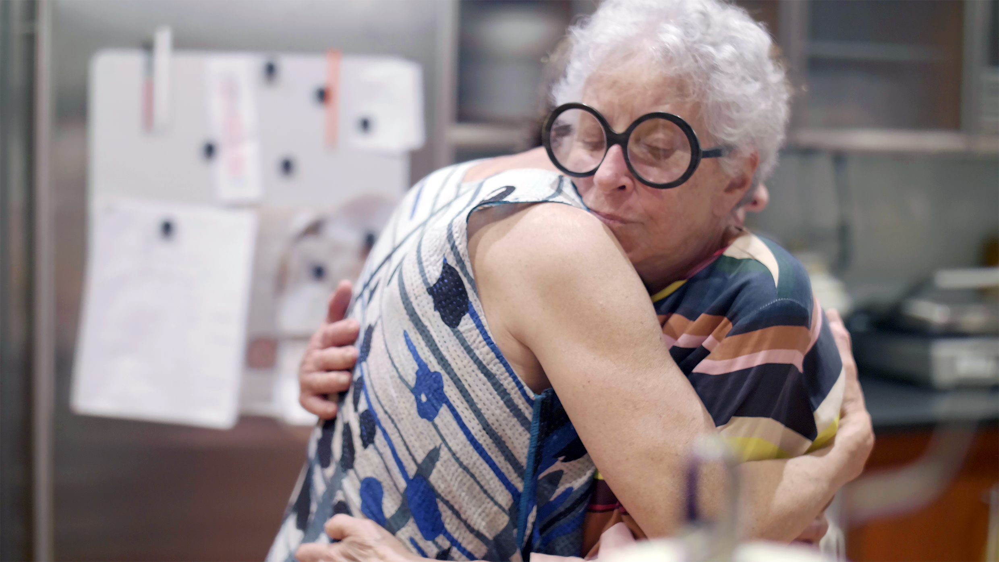
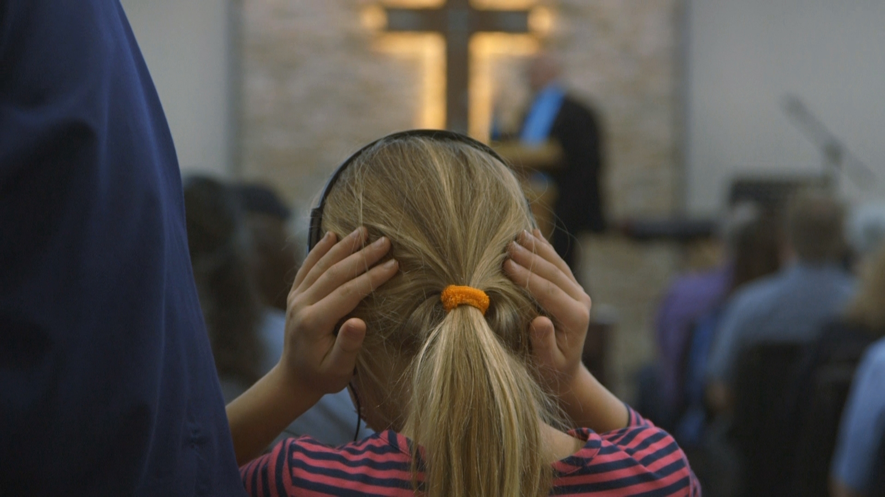

I am a documentary filmmaker based in New York. I make documentaries about women building confidence inside systems designed to diminish them — exploring the tension between existing within and resisting patriarchal norms.
Our Body Electric
2024

Favorite Daughter
2022
Ms. Diva Trucker
2021

At Arm's Length
2019
Our Body Electric
2026 · Feature Documentary · Director / Co-Producer
OUR BODY ELECTRIC follows three elite women bodybuilders competing to be Ms. Olympia, the most coveted muscle show title. Offering a behind-the-scenes look at women sculpting themselves into anatomical works of art, this feature-length film is both a testament to the power of athletics and an intimate portrait of women defying societal expectations.
Executive Producer: Caryn Capotosto · DP: Liz Charky, Emily Grooms · Currently seeking distribution
2022 · Documentary Short · Director / Producer / Co-Editor
An intimate portrait of my grandmother Sylvia Weinstock and my mother Janet Isa, sheltering in place together in a lower Manhattan apartment during the COVID-19 pandemic.
Telluride Film Festival · DOC NYC · Seattle IFF · Dok Leipzig · DocAviv · MTV Documentary Films · Streaming on Paramount+ · Executive Producer: Sheila Nevins · BAFTA Student Award shortlist · Student Academy Award shortlist
A long-haul trucker builds community and a new life on YouTube as @MsDivaTrucker43.
Big Sky Documentary Festival · PBS Short Film Festival — Jury Prize · NoBudge · Athena Film Festival · Cinequest · Hot Springs Documentary · Rhode Island IFF · Magnolia IFF — Best Homegrown Film
Two journalists who covered a mass shooting in Sutherland Springs, TX attempt to reconcile their empathic relationships to the survivors with the distance required to continue reporting.
Thin Line Festival — Best Student Film · Fastnet Film Festival — Best Documentary Short · KERA-TV broadcast · Fort Worth Indie Film Festival — Best Domestic Doc Short